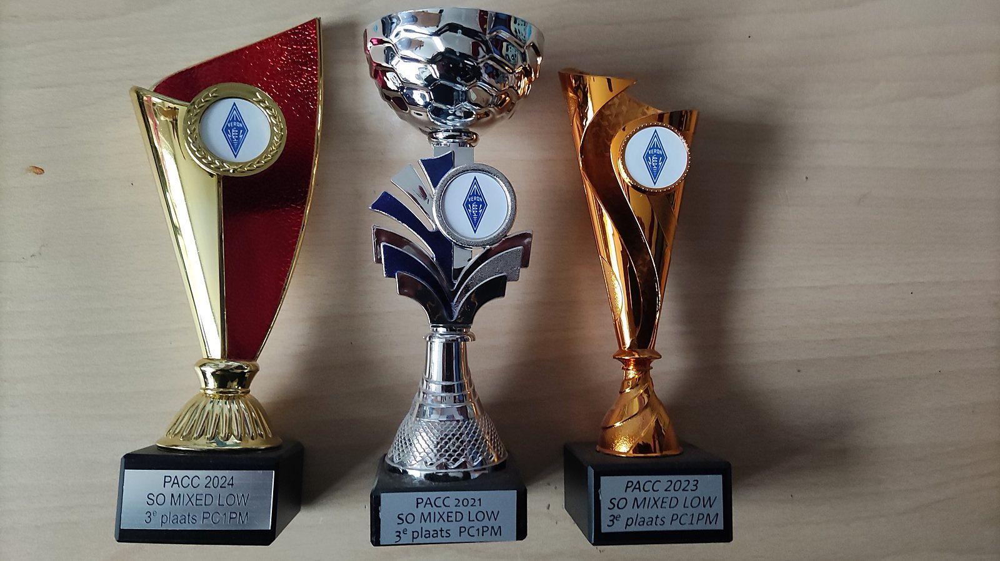
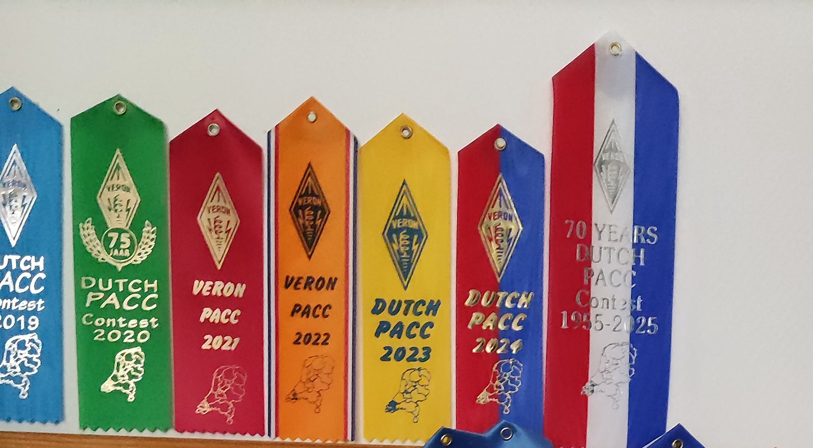

Transceivers
- Icom IC-7300HF/50 MHz SDR-transceiver, hoofdstation
- Icom IC-7000HF/VHF/UHF

Peter Mulder · Nederland · gelicenseerd sinds 2016
Over mij
Leuk dat je even kijkt. Ik heb sinds juni 2016 mijn licentie, maar lang daarvoor zat ik al vele uren te luisteren op de HF-banden.
Tegenwoordig vind je me op HF in CW, SSB en digitale modes: FT8/FT4, RTTY en SSTV. Een goede contest vind ik prachtig, of dat nu thuis is of samen met een team op een velddag.
Hopelijk tot snel in de log! 73 de PC1PM

Live ruimteweer van NOAA wordt geladen… (JavaScript nodig)
Station
Contesten & velddagen
De Dutch PACC Contest van de VERON is mijn favoriet. In de klasse Single Operator Mixed Low Power werd ik drie keer derde.


Meer over de PACC: pacc.veron.nl
QSL
Ik bevestig verbindingen via LoTW en het QRZ Logbook.
Aan de muur hangt een mooie verzameling papieren kaarten uit onder meer Japan, de VS, Brazilië, Noorwegen en Rusland.

Nieuw met radio?
Wat is zendamateurisme, hoe werken SSB, CW en FT8, en waarom is de korte golf zo onvoorspelbaar? Plus de actuele bandcondities en mijn laatste verbindingen.
Zelf gebouwd
Mz Cw Reader, een CW-decoder voor Windows, en QSO Master Pro CW voor CW, RTTY en contesten. Bekijk wat ze kunnen.